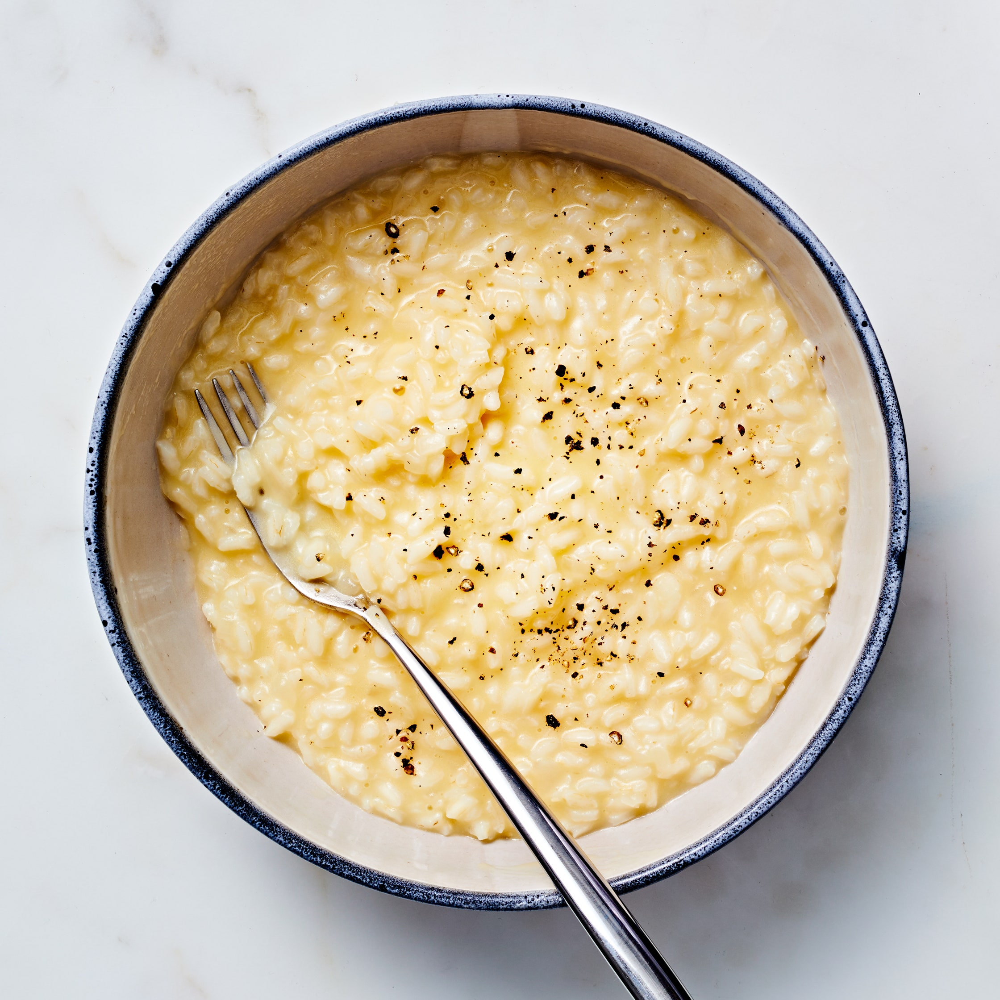
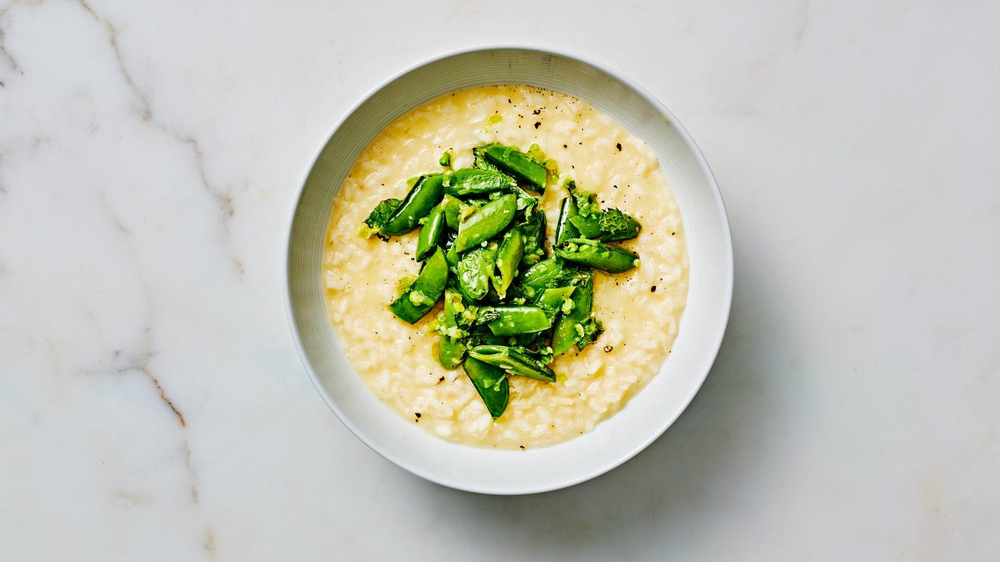
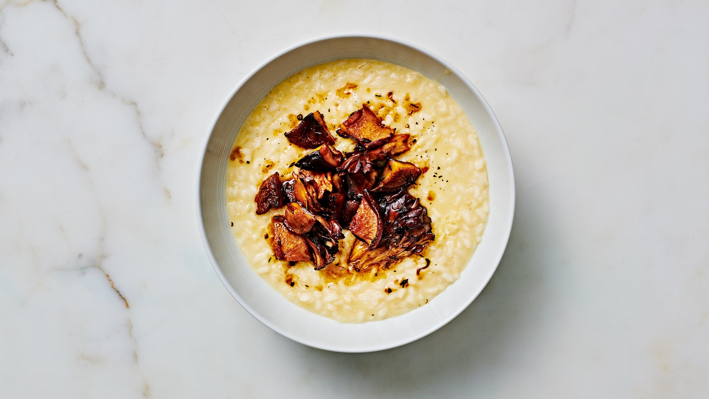

A Simple Risotto

The recipe
Ingredients
- 1 Tbsp. kosher salt, plus more
- 6 Tbsp. extra-virgin olive oil
- 1/2 large white onion, finely chopped (about 1 1/2 cups)
- 2 cups carnaroli, arborio, or Japanese sushi rice, such as Arborio Rice
- 1 cup dry white wine
- 5 Tbsp. unsalted butter, cut into pieces
- 1 1/3 cups finely grated Parmesan, divided
- Freshly ground black pepper
Steps
- Combine 1 Tbsp. salt and 10 cups water in a medium stockpot. Bring to a very bare simmer over medium heat.
- Meanwhile, heat oil in a 6-qt. Dutch oven over medium. Cook onion and a pinch of salt, stirring frequently, until onion is translucent and starting to soften, 6-8 minutes. Add ½ cup water and cook, stirring often, until water evaporates and onion is sizzling in oil and completely tender, about 5 minutes. (Adding the water allows the onion to cook gently and thoroughly without taking on any color.) Taste onion; if it's still firm at all, add another splash of water and continue cooking until meltingly soft.
- Add rice and stir well to coat with oil. Cook, stirring constantly, until grains of rice are translucent around the edges and they make a glassy clattering sound when they hit the sides and bottom of pot, about 5 minutes. Coating the grains with oil before adding any liquid helps the rice cook evenly so that the outside does not become mushy before the center is tender. Add wine and another pinch of salt. Bring to a simmer and cook, stirring occasionally, until wine is completely evaporated, about 2 minutes.
- Reduce heat to medium, then add hot salted water to rice in ¾-cup increments, stirring constantly and allowing liquid to absorb fully before adding more, until rice is al dente and surrounded by fluid, not-too-thick creamy suspension, 25-30 minutes. It should take 2-3 minutes for each addition to be absorbed; if things are moving faster than this, reduce heat to medium-low. Gradual absorption and constant agitation are key to encouraging the starches to release from the risotto, creating its trademark creamy consistency. You may not need all of the hot water, but err on the side of soup rather than sludge. The finished texture should be more of a liquid than a solid. Start checking the rice after about 15 minutes; the grains should be tender but not mushy, with a slightly firm center that doesn't leave a chalky or bitty residue between your teeth after tasting. Do not overcook!
- Remove pot from heat, add butter, and stir until melted. Gradually add 1¼ cups Parmesan, stirring until cheese is melted and liquid surrounding risotto is creamy but very fluid. Stir in more hot salted water if needed to achieve the right consistency. Taste and season with salt.
- Divide risotto among warm bowls. Top each with a grind of pepper. Serve with remaining 1/2 cup Parmesan alongside for passing.
Toppings by the season

Spring: Buttered Sugar Snap Peas with Mint
Heat 4 Tbsp. unsalted butter in a large skillet over medium until foaming, about 1 minute. Add finely chopped white and light green parts of 5 scallions, season with kosher salt and freshly ground black pepper, and cook, stirring occasionally, until scallions are bright green and aromatic, 1-2 minutes. Add 1 lb. sugar snap peas (trimmed, cut in half lengthwise), season again, and cook, tossing occasionally, until crisp-tender, 2-3 minutes. Remove from heat and stir in ½ cup sliced mint leaves. Spoon peas and any pan juices onto the Risotto.

Fall: Browned Mushrooms with Thyme
Heat ¼ cup extra-virgin olive oil in a large skillet over medium-high until shimmering. Add 1 lb. mushrooms (such as shiitake, crimini, or maitake, trimmed, caps torn into 2" pieces) and cook, tossing occasionally, until they begin to soften and release some liquid, 3-4 minutes. Season with kosher salt and freshly ground black pepper and cook, tossing occasionally, until deeply browned and tender, 8-10 minutes. Add 5 crushed garlic cloves, 2 Tbsp. unsalted butter, and 4-5 sprigs thyme and cook, tossing occasionally, until garlic softens and butter is golden brown, about 3 minutes more. Remove from heat and add 2 Tbsp. white wine vinegar or fresh lemon juice. Toss to coat, scraping up any browned bits from surface of pan. Pluck out thyme sprigs. Spoon mushroom mixture onto the Risotto.